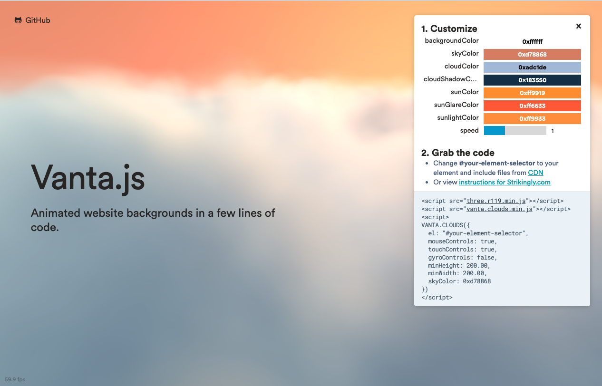
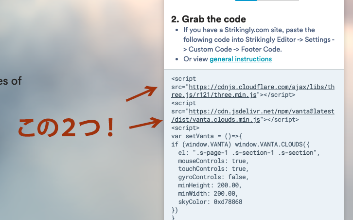
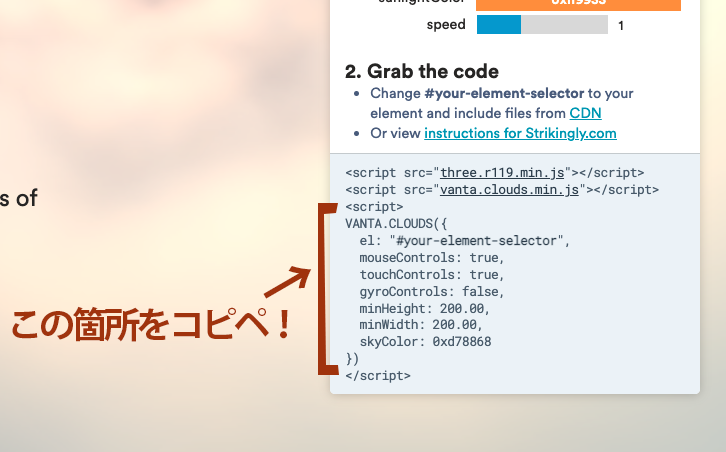
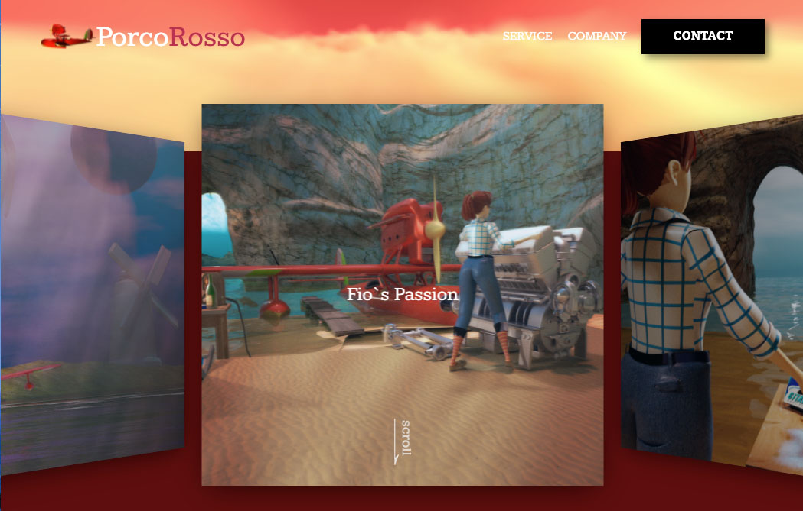

HTMLのみでVanta.jsを簡単に実装！
HTMLのみで埋め込み可能な3DCG,Vanta.js
WEB上で超簡単に3DCGを利用できるライブラリ、Vanta.js。使い方は、HTMLでThree.jsと利用したいVanta.jsのライブラリを読み込むだけ！
Vanta.jsの公式サイトから使いたいデザインのコードをコピペするだけ！three.jsと、vantaのライブラリもCDNをそのままコピペできます！
この記事を読めば、10分もかからずにWEB上でリッチな表現が導入できます！
2分で読めるこの記事を読んであなたもクリエイティブコーダーの一員に!!
Vanta.js公式サイト
Vanta.js公式サイト

まず、Vanta.js公式サイトを訪れ、実装したいアニメーションの種類を選びます！
上の画像はCloudsというアニメーションで、右のCusomizeタブから、直感的に空の色や、
雲の色、雲の影の色など変更を加えることができます！
是非ご自身で使いたいデザインを模索してみてください。
HTMLの準備
まずご自身のPCのどこでもいいので、一枚のHTMLをエディターで開いてください。
そして、bodyタグの一番上にvantaを描画するスペースをdivで作ります！
<div id="your-element-selector"></div>
id名を”your-element-selector”にすると、
公式サイトのコピペのみでvanta.jsが動きます！
次にvanta.jsを動かす二つのライブラリをインポートします。
今回は、インターネット経由で簡単にライブラリのインポートができる、CDN(コンテンツデリバリーネットワーク)を使用します！
CDNは、先ほどのvanta.jsの右側のCustomizeタブに書いてあるものをコピペしてください！
＊"instructions for Strikingly.com"と書いてある水色の文字を押すとCDNのコードが出てきます！

<script src="https://cdn.jsdelivr.net/npm/vanta@latest/dist/vanta.clouds.min.js"></script>
CDNの二つのコードをコピペできたら、先ほどのdivタグの下に貼り付けます！
最後に、ご自身でカスタマイズしたVantaのコードを貼り付けます！
では、公式サイトより、先ほどと同じ箇所の水色の文字
＊"general instructions"をクリックします！

VANTA.CLOUDS({
el: "#your-element-selector",
mouseControls: true,
touchControls: true,
gyroControls: false,
minHeight: 200.00,
minWidth: 200.00,
skyColor: 0xd78868
})
</script>
そして、三つ目のScriptタグ（Vanta.jsのインスタンス）をコピペします。
先ほどの二つのライブラリの下に丸ごとペーストしましょう！
body内の記述はこのようになっているはずです！
<script src="https://cdnjs.cloudflare.com/ajax/libs/three.js/r121/three.min.js">script>
<script src="https://cdn.jsdelivr.net/npm/vanta@latest/dist/vanta.clouds.min.js">script>
<script>
VANTA.CLOUDS({
el: "#your-element-selector",
mouseControls: true,
touchControls: true,
gyroControls: false,
minHeight: 200.00,
minWidth: 200.00,
skyColor: 0xd78868
})
</script>
Vanta.jsを用いた表現の完成！
お疲れ様です！完成しました！！
上記のコードを貼り付けるだけでも、雲の表現をブラウザで表示することができます☺️
今回は、雲の3DCG表現を扱いましたが、vanta.jsは他にも様々なCG表現を
上記と全く同じ要領で扱うことができます!
Webサイトのデザインなどをされてらっしゃる方は、是非取り入れてみてください！！

これは私の作成したサンプルサイトですが、vantaひとつで幻想的な世界観が増しました。
このような表現ひとつで、サイトの閲覧者もクライアントもワクワクしてくれますよ☺️
これからもクリエイティブコーディングの面白さを発信していきます！
私のツイッターや、このブログサイトのフォローをよろしくお願いいたします！